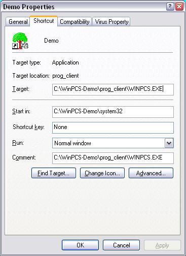

Some problems with starting and running WinPCS are quite common. The communication between two application over a network can fail for a lot of reasons, and the operating systems and database-systems can also add their share of possible faults. Here are some of the most common things that can be wrong.
The user is able to run a status index report, but when wanting to make changes to the layout, the changes will not stick and be stored in AUTOCODE when using the save button in the editing window.
There is an entry in USYM that controls this, it is EAUTOCODE. The table shoul also ideally be defined in CXDICT with ITEMFIELD being LCXFUNCTION, ITEMUNIFLD is RSERIAL and ITEMDESFLDS being DESCRIPTION. BASEDESCR should be something like "Formatting Function".
Make sure that the user has the A permission set for the EAUTOCODE entry when wanting to save these reports. It has been observed in some systems that the MATRIX field in WUSER is not been fully filled with A or H letters, but has a long sequence of spaces at the end. When looking in the list for Define User, these positions appear as H - Hidden, unavailable.
The server starts normally, but when attempting to run the client, an error message with this text appears. The port number is most often 5166, though other values such as 443 are possible. Stopping the server or moving it to the port indicated makes no difference: the client is not actually locating the server at all, as the message says, it cannot get anything happening with the "NO-SERVER". Making changes to entries in winpcs.ini does not seem to work either; turning debugging on with a debug= entry in section [WinPCS] for example, in an attempt to figure out this is futile.
The command-line debug statement, -N "udp host:port" for example, does turn the debugging on, and shows the client stopping at first attempt to contact the server.
The client is failing to read the WINPCS.INI file. This could of course be because that file is missing, or it could be that there is an ANCHORC.DLL, located in the wrong directory, such as PROG_CLIENT. There should be only one ANCHORC.DLL file, and this one should be in the system directory, usually this directory is called system32.
If there is an ANCHORC.DLL in PROG_CLIENT, all the files normally sitting in system32 are expected to be found there instead; the ANCHORC.DLL has "anchored" the position of the client in the file system, but in the wrong place.
Locating, then removing or at least renaming any stray ANCHORC.DLL files will fix this.
On starting the client, there pops up a message-box with the title WinPCS and the text "Could not access the ANCHORC.DLL".
As the message indicates, the file ANCHORC.DLL, which is used to position WinPCS within the file-systems, could not be accessed and loaded successfully.
The ANCHORC.DLL file for the project should be in the system32 directory, and the shortcut from the client should point to this directory as its current directory, as shown in this image:

This indicates that the server is not found by the client at all, that the client cannot see the server through the network.
On starting the client, a message-box with the title "WinPCS startup Failed" saying something like "Server Demo endpoint `5166` connection error 1722". The name "Demo" would be the name of the server machine that the client is looking for; this can also be shown as an IP address. An Endpoint, which may be a TCP port number different from the example 5166, may also be included in the message.
There can be a number of reasons for this:
Check this one first. If the server is running as a service, check if it is still running, or stop the service and let the server run in a command-window just to be sure its absence is not a problem. Once the client works, re-try it with the server as a service.
Before the client and server have been found to connect, leave the server running in its command-window, this contains some important information that will be valuable in the following.
Make sure that the settings in the server.ini and the winpcs.ini agree on their endpoint setting. This entry should either be absent in both files, when the server and client uses the settings in their ANCHORS.DLL/ANCHORC.DLL files; or they should agree on the port number, which usually is somewhere in the range 14100-14135. On startup, the server announces this port number in its command-window, at the end where it says: "The WinPCS-Server is listening on 14100..." or whatever other port number it is using. If this port number does not look right, check the endpoint= setting in the server.ini file. To make any changes in server.ini take effect, the server must be stopped and restarted.
Make sure the server's name or IP address is specified correctly in the server= entry in the client's WinPCS.INI file. On WAN installations, there may be different names or IP-addresses from within or outside of the installation; the variant specs server1= server2= etc can be used to indicate this in the winpcs.ini files, having the clients using the server1= start with the command-line argument "-S 1", the clients using the server2= name start with the command-line argument "-S 2", and so on. Servers misidentified like this may often show in the message box as the server name "No-server".
On startup, the WinPCS server program announces the hostname of the machine it is running on, Look for the first line after the initial announcements of load addresses of DLLs, their names and versions, that reads something like:
W31SVR W31svr.c(95): hostname = KRL2137
The name after the "hostname =" is the server machine's hostname which is what the client should be looking for in its server= entry in winpcs.ini.
This may happen on a WAN if there are firewalls between the two, and traffic on the TCP port that WinPCS uses is not let through. First, to eliminate other reasons, make sure that the server and client can communicate on a LAN so that the server is running and that they are in agreement about the port numbers and other settings. It may also be useful to first try ping to see if the network appears connected at all. Note that ping uses ICMP packages, not TCP, so even if ping makes it through, that still doesn't mean TCP will necessarily work. To check the TCP port, something like nmap can tell if a server is visible and listening, but before doing this, check that the firewalls and proxies are open for this port.
This indicates that the client was denied access to the server.
The client program starts with a message box with the title "WinPCS startup Failed" saying "Server Demo endpoint `5166` connection error 5".
The server would not let the client connect, because of a total authentication failure. This may be because the authentication is turned off on the client but be set as required by the server or the operating system.
Check that the settings for auth= in server.ini and winpcs.ini are the same, and that auth=on in both files if either the server or the client, or both, are running on Windows XP SP 2, where authentication is required by the operating system. On other Windows versions, the authentication may be either on or off, but the server and the client should agree.
This indicates that the client could not authenticate to gain access to the server.
The client program starts with a message box with the title "WinPCS startup Failed" saying "Server Demo endpoint `5166` connection error 1747".
This happens if the client has authentication turned on and the server has it turned off. The system cannot reconcile the authentication method that the client is announcing, with what the server is using. The fix is easy: make sure that auth= in both the server.ini and the winpcs.ini agree, either on or off, and if either of the client or server is running Windows XP SP2, make sure it is auth=on everywhere.
This indicates that the client code is incompatible with the server.
The client program starts with a message box with the title "WinPCS startup Failed" saying "Server Demo endpoint `5166` connection error 1717".
This happens when the client-side RPC files are incompatible with the server-side RPC files. This can happen when these two sets of files are from different compilations, and they are sufficiently different so that they no longer "talk the same language".
Make sure that both the server and the client run files created on the same date. We always publish matched pairs of server and client executables ("DLLs") with the same date stamp, as zip files, with the prefix SV for server and CL for client, and the next six digits identifying the year, month, and day.
For example, SV060821.ZIP and CL060821.ZIP would be such a pair created on August 21 2006.
See http://winpcs.com/updates for the most recent of these files.
This indicates that the client could connect and authenticate, but that finding or calling the actual function on the server failed.
CHECKSV can report this when testing server connectivity, or The WinPCS client program starts with the usual splash-screen and, if that is being used, the login dialog where the user logs in; then the program stops with a message box with the title "WinPCS startup Failed" because of "Server Demo connection error 1727".
There are several possible reasons for this. This could happen because the editions of the clients CHECKSV.EXE or NEXUS31.DLL and the server W31SVR.EXE are mismatched; in that the RPC functions in them do not line up properly. This could also happen when running clients and servers of different ages. Check the version strings of the two executable components. If these have different build numbers, that means they were not compiled together, and may not necessarily work together. Sometimes, RPC functions have to be added or modified, and this can cause various incompatibilites between servers and clients of different vintages. However, if their build numbers are the same, they should also work together.
If the error occurs on connections (as evidenced by debugging-statements from CHECKSV.EXE), the problem might also be with firewalling of the server site, and certain versions and service-pack levels of the Windows 2003 server and Windows XP workstations. Evidently, certain recent service packs have changed their protocol for authentication, and this may have become blocked by firewalls. There may also be other firewall settings that block the secondary, reverse, connections that the RPC system on the Windows machine running the WinPCS client, makes in the port range anywhere from about 1050 and upwards, and which it needs for doing its work.
In particular, if the regular nmap TCP connect command:
nmap -sT -p port server
indicates the port on the server open and available, but the status 1727 error still occurs, this could be
the case.
This indicates that the WinPCS server could not talk with the Pervasive database, and have it tell where the CXDICT data file is located.
The server startup screen, if run from the command-line, reports that there were errors encountered on startup, and the lines showing errors read something like this:
TMGT check.c(60): Start-Check: Table CXDICT file ... Error TMGT open.c(121): Open3: Table CXDICT file Btrieve Open = 11 TMGT check.c(71): Start-Check: Table CXDICT Open state = 1 ... Error
There should normally appear path names after the word "file" in the first two lines. The status value 11 for Btrieve Open in the second line indicates a bad filename as well.
Other values commonly seen are 94 meaning Btrieve did not start, 161 meaning the user-licenses are not correct, and 3012 when the Workgroup Engine is not running.
This indicates that the WinPCS server is not able to get the correct data out of the Pervasive (Btrieve) engine. Make sure Pervasive is running and functioning well, and that the WinPCS server program runs on the sam machine as the Pervasive engine. (sometimes, remote access and the like may make this a little unclear)
This indicates that although the WinPCS client and server server could talk to each other over the network, and read the table files, WinPCS is not allowed to write to them. One common problem is that the data files is in an older version that the Pervasive package no longer supports writing to. Pervasive version 9 can read, but not write, version 5 files, which are the ones used in all the old 16-bit projects.
Server and client start normally, reporting no errors, and everything actually works fine until some record in some table is to be inserted or updated. Then this fails with "error 46", indicating that this table is effectively read-only. This may only apply to some tables, where the ones that work has been stored in a file version that the working Pervasive version can write to.
As mentioned above, there is a mismatch between the Pervasive version being used and the format of the files. For example, with Pervasive 9 being deployed on new projects, old files from the 16-bit days, which are version 5, no longer can be updated; revealing this problem.
There is a utility that comes with Pervasive, called "Rebuild", that can be used to upgrade the format of the data files to more recent versions. As all the old features are retained in the newer versions, there is no real operational impact on WinPCS itself.
Status indexes run normally and show all the objects expected, but the report is cluttered with records where some fields say <no leaf> instead of the identifier.
The information in STADLG.INI for this report does not contain a statement telling what to do with unconnected items, the usual thing to do with these is to skip them; thus make sure there is an entry reading
unconn=4 SKIP
in the relevant section in STADLG.INI.
The old default was to include these, with some co-operative programming, this can be used to display summaries for higher-up objects in the report. Then again, the Qreports have been made to do this easier.
When doing the Create action from the Toolbox, the creation fails with the message: "DB Engine Status 25 Create I/O error". The table will not have been created.
This is caused by the table-file being locked by Btrieve, on behalf of some user. In general, when re-creating table files, there should only be one user on the system. The stop-flag mechanism is useful to ensure that other clients are out. Check which ones these are in the System/Server/Info on connections list.